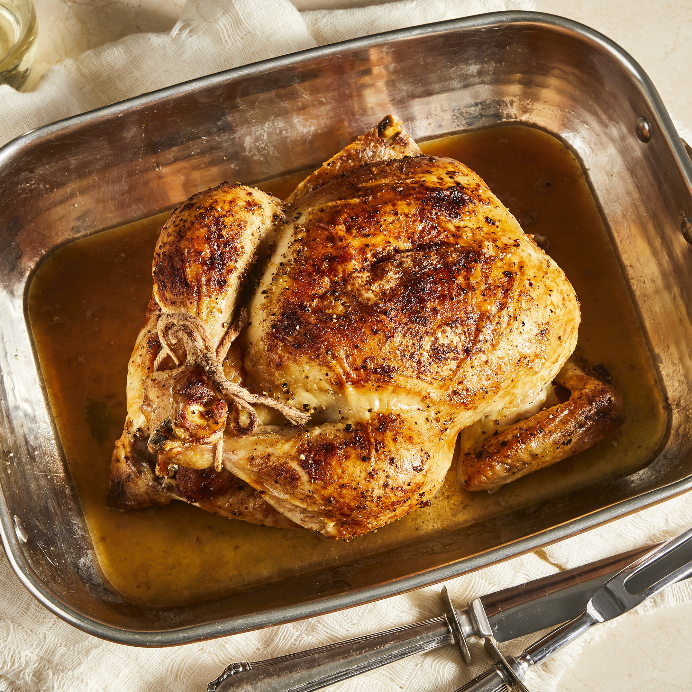

Juicy Roasted Chicken

Description
Roast chicken is chicken prepared as food by roasting whether in a home kitchen, over a fire, or with a rotisserie (rotary spit). Generally, the chicken is roasted with its own fat and juices by circulating the meat during roasting, and therefore, are usually cooked exposed to fire or heat with some type of rotary grill so that the circulation of these fats and juices is as efficient as possible. Roast chicken is a dish that appears in a wide variety of cuisines worldwide.
Ingredients
- 1 (3 pound) whole chicken, giblets removed
- salt and black pepper to taste
- 1 tablespoon onion powder, or to taste
- ½ cup margarine, divided
- 1 stalk celery, leaves removed
Steps
- Preheat oven to 350 degrees F (175 degrees C).
- Place chicken in a roasting pan, and season generously inside and out with salt and pepper. Sprinkle inside and out with onion powder. Place 3 tablespoons margarine in the chicken cavity. Arrange dollops of the remaining margarine around the chicken's exterior. Cut the celery into 3 or 4 pieces, and place in the chicken cavity.
- Bake chicken uncovered in the preheated oven until no longer pink at the bone and the juices run clear, about 1 hour and 15 minutes. An instant-read thermometer inserted into the thickest part of the thigh, near the bone, should read 180 degrees F (82 degrees C). Remove from heat and baste with melted margarine and drippings. Cover with aluminum foil and allow to rest about 30 minutes before serving.